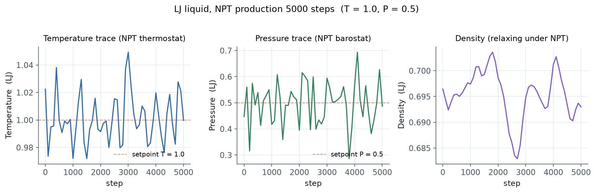

NOTE 31-06-00 · 셋업과 실행
1. 일반 사항
A. 목적
- 이 노트는 박스, 원자, 힘장을 정의한 뒤 시뮬레이션 시작 전에 정하는 명령을 다룬다.
- 대상 명령은 다음 다섯 묶음이다.
- 초기 속도:
velocity - 시간 간격:
timestep - 이웃 리스트:
neighbor,neigh_modify - 앙상블 / 제약:
fix - 실행:
minimize또는run
- 초기 속도:
참고 이 명령들은 늘 함께 다니다시피 한다. 입력 스크립트 3·4단계의 전형적인 마무리로 보아도 된다.
B. 적용 범위
units real,metal,lj의 timestep 출발점을 다룬다(3.B).- 적분 fix는 NVE, NVT, NPT, Langevin 열욕을 다룬다(3.E).
C. 결과 요약
- 입문 예제는 거의 다 3.I 의 순서(velocity → minimize → 짧은 NVT → NPT)로 짤 수 있다.
- LJ 액체 2048개에 이 순서를 적용하면 production 단계에서 온도 1.0 ± 0.04, 압력 0.5 ± 0.2 정도로 진동하며 평형을 유지한다(4.A).
- 같은 실행에서 밀도는 0.69–0.70 부근에서 NPT 평형에 이른다.
2. 준비 정보
A. 참조 자료
| 참조 | 제목 |
|---|---|
| 2장 (입력 스크립트 구조) | run/minimize 호출 전에는 설정만 쌓인다 |
| 예제 E2 — LJ 5단계 | in.demo 전체 스크립트와 RDF·MSD 분석 |
B. 공구 및 장비
| 항목 | 용도 |
|---|---|
| LAMMPS 22 Jul 2025 (conda-forge), 직렬 빌드 | 4.A 의 LJ 액체 실행 |
C. 소모품
| 항목 | 용도 |
|---|---|
in.demo 와 출력 파일 (guides/lammps/.build/lammps-demo/) |
4.A 의 실행 입력과 결과 |
assets/images/lj-production.png |
4.A 의 그림 1 |
D. 선행 조건
- 박스, 원자, 힘장이 모두 정의되어 있어야 한다.
3. 절차
A. velocity: 초기 속도 부여
경고
비주기 시스템에서 mom/rot 을 켜지 않으면 시스템 전체가 일정한 속도로 흘러가 버린다(drift). 항상 켜 두는 편이 낫다.
- 초기 속도를 다음과 같이 부여한다.
velocity all create 300.0 12345 mom yes rot yes dist gaussian
- 각 인자의 의미를 확인한다.
all: 속도를 줄 그룹 이름 (group명령으로 정의 가능,all은 기본 제공)create 300.0 12345: 가우시안 분포로 온도 300 K, 시드 12345mom yes: 시스템 전체 운동량을 0으로 보정rot yes: 시스템 전체 각운동량을 0으로 보정 (비주기 시스템이라면 켜 둔다)dist gaussian: 가우시안 분포 (기본은uniform)
B. timestep: 적분 시간 간격
- 적분 시간 간격을 설정한다.
timestep 1.0 # units real 의 경우 1 fs
- 단위계별 출발점을 아래 표에서 고른다.
units |
보통 출발점 |
|---|---|
real |
1.0 (fs) |
metal |
0.001 (ps = 1 fs) |
lj |
0.005 (τ) |
- 물이나 H 가 있는 시스템에서 1 fs로도 불안하면 결합을 SHAKE/RATTLE 로 구속한다.
- 구속한 뒤 timestep을 2 fs로 늘린다.
fix shake all shake 0.0001 20 0 b 1 a 1
timestep 2.0
C. neighbor: 이웃 리스트
주의 이웃 리스트 설정을 잘못 잡으면 "Lost atoms" 나 "Neighbor list overflow" 오류가 나기 쉽다.
- 이웃 리스트를 다음과 같이 설정한다.
neighbor 2.0 bin
neigh_modify every 1 delay 0 check yes
- 각 명령의 의미를 확인한다.
neighbor 2.0 bin: 이웃 리스트의 buffer skin 2.0 (단위계 길이), bin 방식neigh_modify ...: 매 step 마다 체크하고 필요하면 재구성
- skin 값은
units lj에서neighbor 0.3 bin,units real / metal에서neighbor 2.0 bin정도로 시작한다.
D. fix: 기본 형식
fix를 다음 형식으로 쓴다.
fix ID group-ID style arguments...
참고
fix 는 LAMMPS에서 가장 자주 등장하는 명령이다. 앙상블 적분, 제약 조건, 외력, 측정량 평균, 통계 출력까지 거의 모두 fix로 표현한다.
E. 적분 fix 선택
경고
적분 fix는 한 개만 건다. 같은 그룹에 적분 fix 두 개(예: nve와 nvt)를 동시에 걸면 적분이 두 번 일어나 결과가 망가진다. Langevin과 NVE 조합처럼 "적분은 nve가, 온도 제어는 langevin이" 맡도록 역할을 나눈 경우에만 두 fix를 같이 쓴다.
- NVE (마이크로캐노니컬)는 다음과 같이 건다.
fix 1 all nve
- NVE는 가장 단순하다. 에너지 보존이 검증되는 유일한 앙상블이라 처음 시험할 때 자주 쓴다.
- NVT (캐노니컬, Nose-Hoover 열욕)는 다음과 같이 건다.
fix 1 all nvt temp 300.0 300.0 100.0
# T_start T_stop T_damp
T_damp는 timestep × 100 정도에서 시작한다(units real에서 100 fs).- NPT (등압등온)는 다음과 같이 건다.
fix 1 all npt temp 300.0 300.0 100.0 iso 1.0 1.0 1000.0
# ^ ^ ^ ^
# P_axis P_s P_e P_damp
- 압력 결합 방식을 고른다.
iso외에aniso(축별 독립),tri(완전 비등방),x/y/z(축 지정) 등이 가능하다. P_damp는 보통T_damp × 10정도로 둔다.- Langevin 열욕 (NVT 대안)은 다음과 같이 건다.
fix 1 all nve
fix 2 all langevin 300.0 300.0 100.0 12345
참고 Langevin은 NVT와 비슷한 효과를 낸다. 표면 흡착이나 거대 분자 시스템에서는 Nose-Hoover보다 빨리 평형으로 끌고 간다.
F. 그 외 fix
- 필요에 따라 아래 fix를 더한다.
| fix | 역할 |
|---|---|
fix shake |
결합/각도 구속 (긴 timestep용) |
fix wall/lj93 |
LJ 벽 (슬랩 비주기 면) |
fix recenter |
시스템 무게 중심 고정 |
fix momentum |
주기적으로 운동량 0으로 리셋 |
fix print |
시뮬레이션 중 변수를 파일에 출력 |
fix ave/time |
시간 평균 출력 |
fix indent |
점진적 압축(인덴터) |
G. minimize: 에너지 최소화
주의 격자에서 만들었거나 데이터 파일에서 막 읽은 시스템에는 너무 가깝게 놓인 원자가 종종 있다. 이 상태로 적분하면 첫 적분에서 폭주하곤 한다.
- 적분 전에
minimize를 먼저 돌린다.
min_style cg # 또는 sd, fire, hftn
minimize 1.0e-4 1.0e-6 1000 10000
# etol ftol maxiter maxeval
- 각 인자의 의미를 확인한다.
etol: 에너지 수렴 기준 (상대 변화량)ftol: 힘 수렴 기준 (norm)maxiter: 최대 iterationmaxeval: 최대 에너지/힘 평가 횟수
- 최소화 방식은 대개
cg(conjugate gradient)로 충분하다. - 초기 구조가 아주 거칠면
fire를 쓴다.fire가 안정적이다.
H. run: 적분 실행
- 적분을 실행한다.
run 10000
- 필요하면 아래 옵션을 쓴다.
run 10000 every 100 "print 'step $step done'" # 매 100 step 후 명령 실행
run 50000 pre no post no # 연속 run의 초기화 생략
run 20000 start 0 stop 100000 # fix nvt 의 T_start~T_stop 보정용
참고
2장에서 말했듯 run 이나 minimize 를 호출하기 전까지는 설정만 쌓일 뿐 실제 계산은 일어나지 않는다.
I. 전형적인 입력 마무리
- 3.A–3.H 의 명령을 다음 순서로 묶어 입력 스크립트의 끝을 구성한다.
# === 시뮬레이션 설정 ===
velocity all create 300.0 12345 mom yes rot yes
timestep 1.0
neighbor 2.0 bin
neigh_modify every 1 delay 0 check yes
# === 단계별 fix ===
min_style cg
minimize 1.0e-4 1.0e-6 1000 10000
fix 1 all nvt temp 300.0 300.0 100.0
thermo 1000
run 50000 # 평형화
unfix 1
fix 1 all npt temp 300.0 300.0 100.0 iso 1.0 1.0 1000.0
run 200000 # 생성 시뮬레이션
참고
입문 예제는 거의 다 이 순서로 짤 수 있다. 4.A 에서 요약한 in.demo 의 전체 스크립트와 RDF·MSD 분석은 예제 E2 — LJ 5단계 한 페이지에 모아 두었다.
4. 시험 및 검사
A. LJ 액체의 NPT 안정성
- 3.I 의 패턴을 LJ 액체에 적용한다.
- 시스템은 8 × 8 × 8 격자(fcc 0.8442, 원자 2048개)로 만든다.
- 최소화 → NVT (T = 1.0, 2000 step) → NPT (T = 1.0, P = 0.5, 3000 step) → production (NPT, 5000 step) 순서로 실행한다.
- 실행 시간은 LAMMPS 22 Jul 2025(conda-forge) 직렬 빌드에서 약 7초다.
# in.demo (요약) — 위 패턴의 LJ 버전, 실제 실행된 입력
units lj
atom_style atomic
lattice fcc 0.8442
region box block 0 8 0 8 0 8
create_box 1 box
create_atoms 1 box
mass 1 1.0
pair_style lj/cut 2.5
pair_coeff 1 1 1.0 1.0 2.5
velocity all create 1.0 12345 mom yes rot yes dist gaussian
neighbor 0.3 bin
neigh_modify every 20 delay 0 check no
min_style cg
minimize 1.0e-4 1.0e-6 1000 10000
fix 1 all nvt temp 1.0 1.0 0.5
run 2000
unfix 1
fix 2 all npt temp 1.0 1.0 0.5 iso 0.5 0.5 5.0
run 3000
# (이후 reset_timestep 0; production run 5000)
- production 단계의 thermo에서 온도를 확인한다. setpoint 1.0 부근에서 ±0.04 정도로 진동해야 한다.
- 압력을 확인한다. setpoint 0.5 부근에서 ±0.2 정도로 진동해야 한다.
- 밀도를 확인한다. 0.69–0.70 부근에서 NPT 평형에 이르러야 한다.

5. 종료
B. 후속 작업
- 다른 시스템에 같은 흐름(velocity → minimize → 짧은 NVT → NPT)을 적용한다.
참고
이 흐름은 작은 LJ 시스템부터 큰 분자 시스템까지 거의 그대로 쓸 수 있다. 시스템에 따라 timestep, T_damp, P_damp 값만 조정하면 된다. in.demo 와 출력 파일은 저장소의 guides/lammps/.build/lammps-demo/ 에 있다.